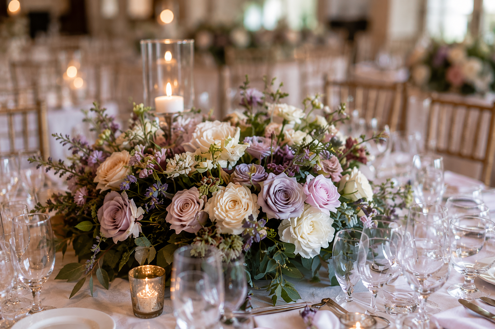
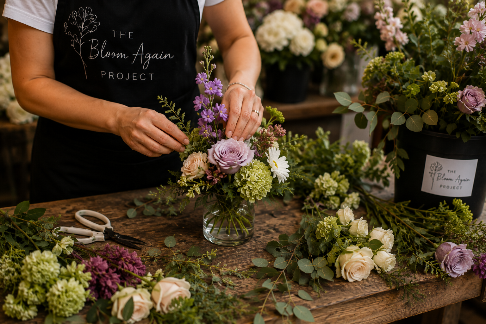
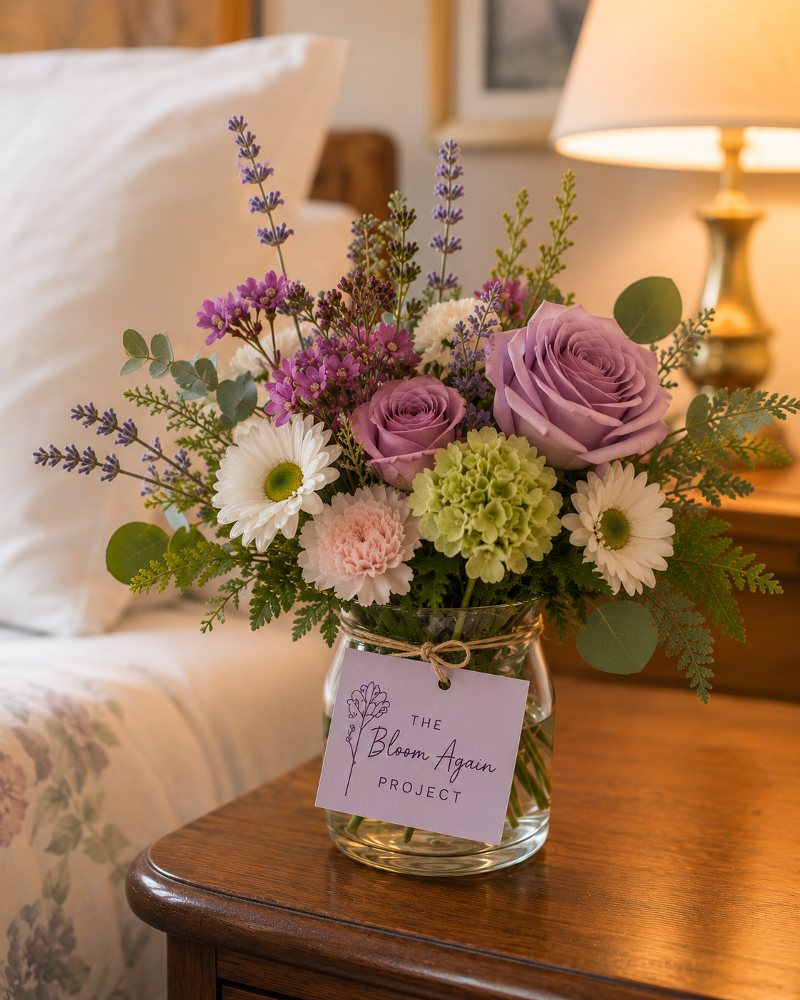
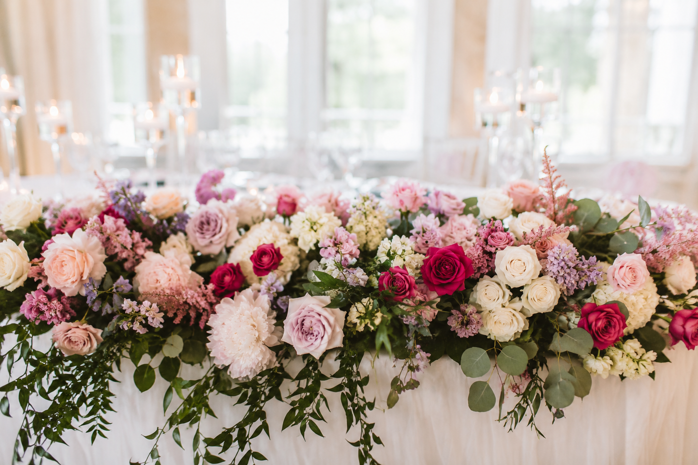
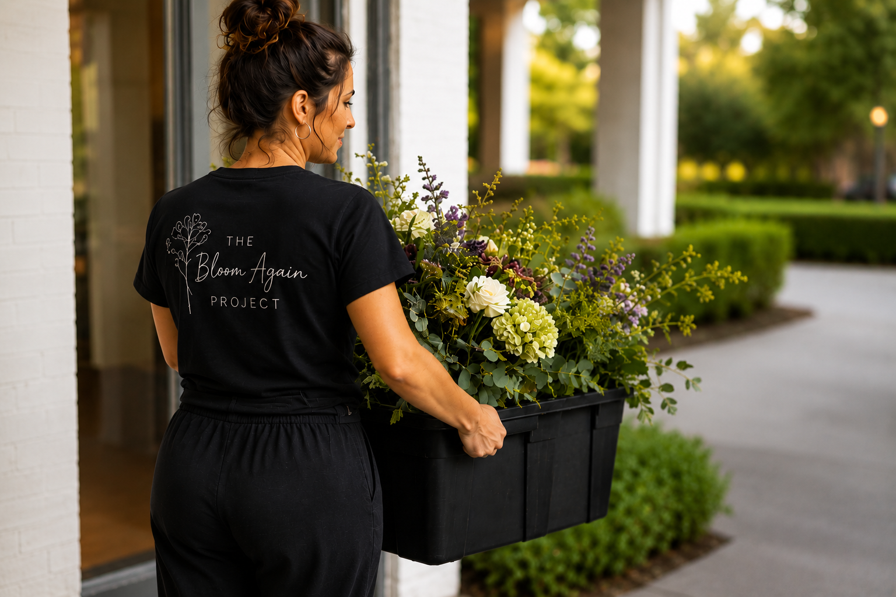
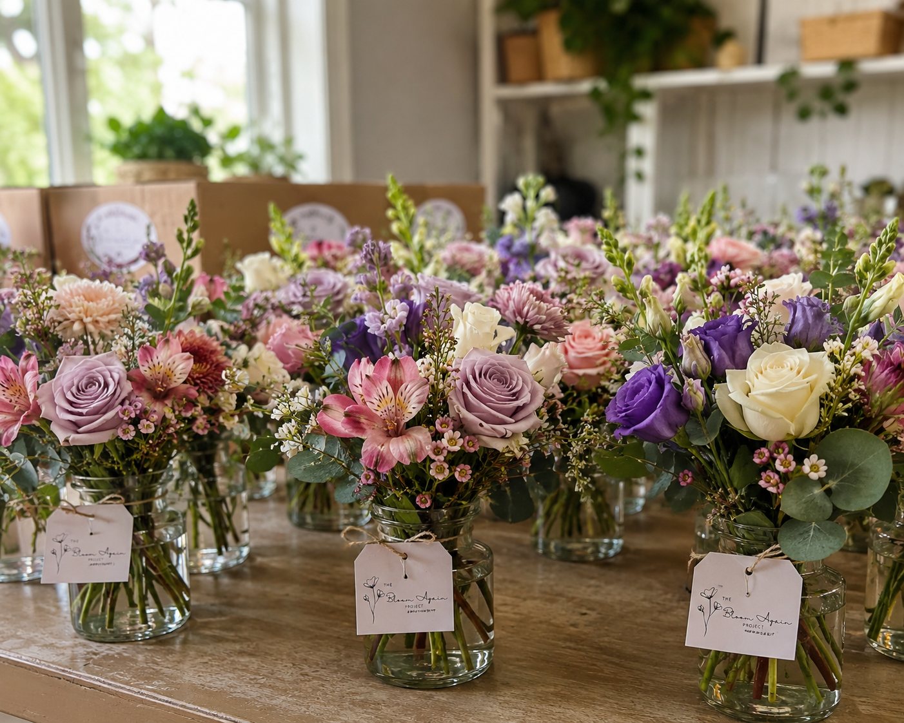

Donate Your Flowers
Your celebration may be over, but your flowers can keep giving. Donate your wedding or event florals and we'll coordinate pickup so they can bloom again for someone else.
Donate Your Flowers →We give wedding and event flowers a second life, transforming them into bedside bouquets that bring a little beauty and kindness to people in local care communities.
The Bloom Again Project started with a wedding, some leftover flowers, and someone I loved very much.
Working in the wedding industry, I had watched beautiful flowers get left behind after countless celebrations. Flowers that had been carefully chosen and enjoyed for just a few hours often had nowhere to go when the night was over.
Then my dear friend Cookie entered hospice care.
I brought leftover wedding flowers to her at the hospice house. It was such a small gesture, but seeing the happiness those flowers brought into the room changed the way I looked at every arrangement left behind after an event.
I couldn't stop thinking about how something that had already made one moment beautiful could do it all over again.
And The Bloom Again Project began.
Today, we collect flowers from weddings and events and give them a second life. With the help of volunteers, they are transformed into smaller bedside arrangements and delivered to people who could use an unexpected reminder that someone is thinking of them.
Because sometimes a small act of kindness can feel very big to someone going through a difficult time.
We simply help the flowers bloom again.
One celebration ends. Another beautiful moment begins.

When your wedding or event is over, your flowers don't have to be. Let us know you'd like to donate them and we'll help coordinate the details.

We coordinate with you, your planner, venue, or florist to arrange pickup of your donated flowers after the event.

Our volunteers carefully sort and redesign the donated flowers into smaller bedside arrangements, giving each bloom a beautiful second life.

The finished arrangements are delivered to hospice and care communities, bringing a little beauty and kindness to someone's bedside.
There are many ways to help our flowers — and our mission — bloom again.
Your celebration may be over, but your flowers can keep giving. Donate your wedding or event florals and we'll coordinate pickup so they can bloom again for someone else.
Donate Your Flowers →Venues, planners, florists, hotels, and event professionals can help us give beautiful flowers a second life. Partner with us to make floral donation an easy part of your events and help more flowers reach people who could use a little joy.
Partner With Us →From collecting flowers to creating bedside arrangements and helping with deliveries, our volunteers are at the heart of helping flowers bloom again.
Join Our Volunteers →A few flowers. A little time. A second chance to brighten someone's day.




Donating your flowers should be simple. Here are a few things you may want to know.
We accept fresh flowers from weddings, celebrations, corporate events, hotels, venues, and other special events. Flowers should still be in good condition so our volunteers can give them a beautiful second life.
Once we know about your event, we'll work to coordinate pickup details with you, your planner, venue, florist, or designated contact. Our goal is to make donating your flowers as easy and hassle-free as possible.
There is no cost to donate your flowers to The Bloom Again Project. We simply ask that you contact us in advance so we can work with you to coordinate the donation and pickup.
Donated flowers are repurposed into smaller arrangements and delivered to people in hospice, nursing homes, and other care communities in our local area.
The earlier, the better. Advance notice helps us coordinate volunteers, transportation, and delivery. If your event is coming up soon, you're still welcome to reach out and we'll do our best to accommodate your donation.
Absolutely. We love working directly with venues, planners, florists, hotels, and event professionals. They can contact us on your behalf and help coordinate the pickup details.
Yes. Volunteers are an important part of what we do. Opportunities may include collecting donated flowers, preparing arrangements, organizing supplies, and assisting with deliveries.
When the celebration ends, the kindness doesn't have to. Donate your wedding or event flowers and help us turn them into unexpected moments of beauty for people in our community.
Donate Your FlowersQuestions about donating, partnering, or volunteering? We'd love to hear from you.
thebloomagainproject@gmail.com